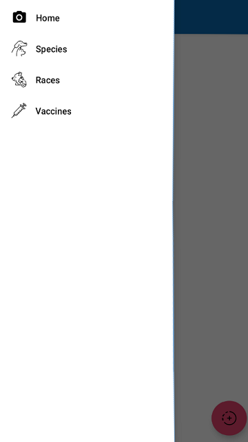
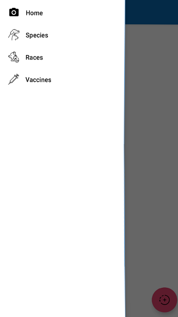
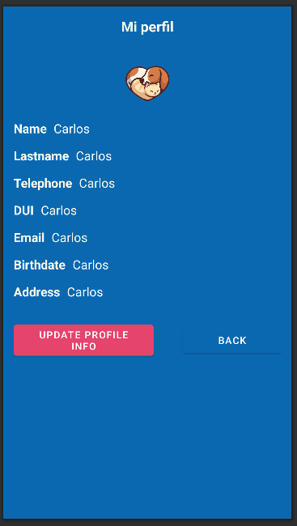
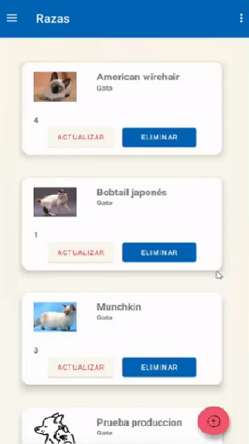
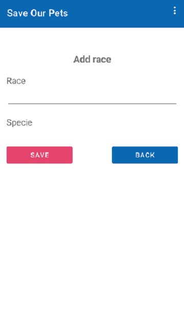
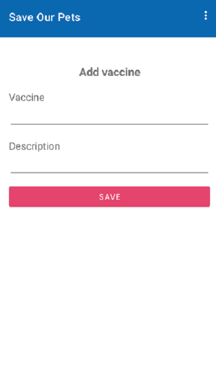
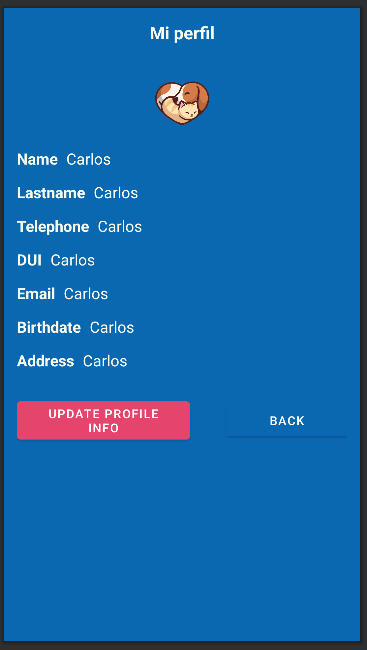
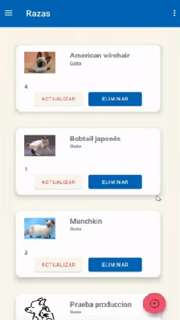
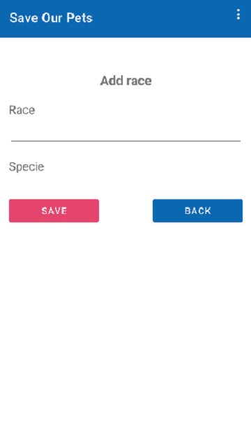
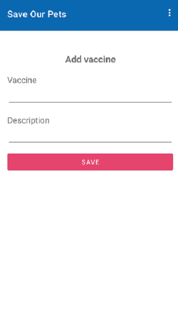

Funcionalidades
- Módulo Usuarios:
- Consiste en las funciones de agregar, editar y eliminar los diferentes tipos de usuario existentes
dentro de la aplicación en base a cada nivel de jerarquia que tendran.
Existiran 3 tipos de usuario: Administrador, Personal ONG y Usuario. - Módulo: Reporte de animal en condición de calle
- Aquí se realiza el reporte de un animal en condición de calle. Para ello dentro de la aplicación se
activa la cámara para poder tomar un video o fotografía del animal, y se solicita el permiso para
acceder a la ubicación geográfica del usuario en ese momento. Se coloca una dirección textual de igual
forma del lugar con referencias para que sea mucho más sencillo identificar el lugar y una descripción
de la apariencia física del animal. Si la persona que realiza el reporte está registrada en el software
queda identificado quién lo hizo, sino se guarda como un reporte anónimo.
Posterior a la realización del reporte la ONG hará el resto, desde llegar al lugar, recoger al animal y llevarlos hasta las instalaciones pertinentes para que sea tratado. Una vez sanado y vacunado el animal se coloca en estado de adopción. - Módulo: Expediente de mascotas:
- Posteriormente se haya hecho un reporte de un animal callejero y de que haya sido rescatado, se
registrara la mascota dentro del sistema, usando la siguiente información:
- Nombre de mascota
- Especie
- Raza
- Color de pelo
- Fecha de nacimiento
- Peso
- Esterilizado
- Estado
- Fotografía
- Estado de salud
Existiran 3 estados para una mascota: En rescate, rescatado o adoptado. - Módulo: Solicitud de adopcion
- Las mascotas que ya se encuentran en buen estado de salud y vacunados se colocan en estado de
adopción. Se muestra un catálogo con el listado de las mascotas disponibles, su foto, nombre y
descripción. Un usuario que desee adoptar a una mascota debe enviar una solicitud de adopción, donde se
le solicitan sus datos personales, en caso que ya se encuentre registrado en la aplicación este paso se
omite y solo debe aceptar los requerimientos para la adopción. Con la solicitud enviada personal de la
ONG verifica los datos y procede a aceptarla o rechazarla según su criterio.
Si es aceptada se envía una notificación al usuario que se aceptó su solicitud y los pasos a seguir para que se le entregue su nueva mascota.
Si es rechazada igual se notifica y se explica el porqué no se aceptó su solicitud.
¿A quién va dirigida la aplicación?
Está dirigida principalmente a aquellos usuarios que tienen una preocupación por el bienestar de los animales y que están dispuestos a tomar medidas para mejorar la calidad de vida de los animales en situación de calle. Los usuarios de esta aplicación podrían incluir:
- Personas que ya están involucradas en el cuidado de mascotas callejeras, como voluntarios en refugios de animales o grupos de rescate.
- Dueños de mascotas que quieren ayudar a los animales callejeros, pero no tienen los recursos o el espacio para adoptarlos.
- Personas que quieren aprender más sobre cómo cuidar de los animales callejeros y cómo pueden ayudar.
- Organizaciones que se dedican al cuidado de animales callejeros y que buscan una manera más efectiva de registrar y monitorear la ubicación y el estado de los animales.
- Personas interesadas en adoptar mascotas callejeras que buscan información y orientación sobre el proceso de adopción.
Posibles imágenes de la aplicación
*El diseño final de las pantallas puede diferir de las imágenes presentadas:
 


 








Costo de la aplicación móvil
Será una aplicación gratuita que permita reportar mascotas callejeras generando una excelente forma de fomentar la responsabilidad social en la comunidad. No sólo ayudaría a solucionar el problema de los animales abandonados en las calles, sino que también contribuiría al bienestar animal y al mejoramiento del entorno urbano.
Al proporcionar esta herramienta de manera gratuita, se promueve el uso masivo de la aplicación, lo que a su vez aumenta la cantidad de reportes recibidos y facilita la identificación y posterior rescate de estos animales. Además, al tener un acceso libre y sencillo, se asegura que la aplicación sea utilizada por personas de todos los niveles socioeconómicos, lo que permite que más personas se involucren en el cuidado y protección de los animales en situación de calle.